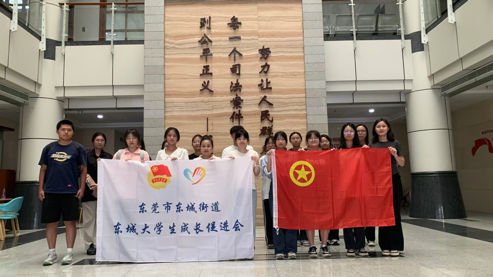
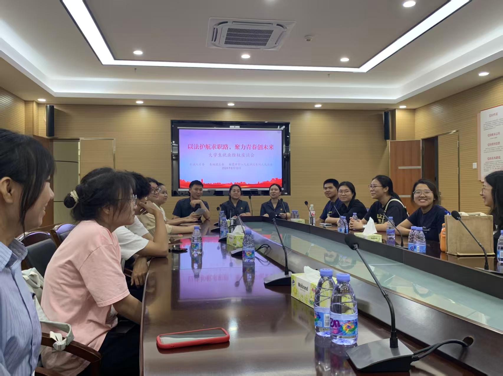
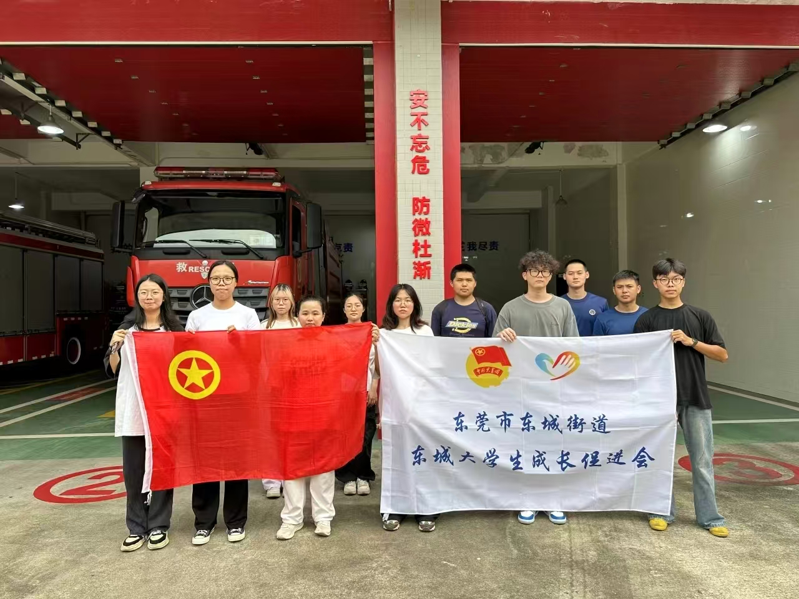

活动执行 · 政务实习
街道团委活动复盘：政府场景下的活动策划怎么做才不无聊
20 场组织落地的实践活动
500 人次累计参与大学生
4 类活动形态全覆盖
一、背景
2025 年暑假，我在共青团东莞市东城街道工作委员会实习，任务是组织辖区大学生参加社会实践活动。听起来简单，实际难点很明显：大学生对「官方组织的社会实践」天然预期是「走过场」——报名率就是活动成败的生死线。
二、我经手的活动
- 人民法院旁听——真实庭审现场观摩
- 消防队体验日——消防装备实操 + 安全教育
- 东城知名企业走访——进厂区/展厅的参观交流
- CityWalk 系列——用城市漫游的形态重新包装街区文化
三、关键动作：把「组织活动」做成「产品设计」
1. 用「稀缺感」解决报名率
法院旁听和企业走访天然有名额限制，我不把它当麻烦，而是当卖点：名额有限 + 报名筛选，让「被选中参加」本身成为吸引力。这是典型的稀缺性营销。
2. 活动之间做「系列感」
单场活动留不住人，所以把多个活动包装成暑期实践系列：参加满系列活动可获实践证明。用户激励 + 连续参与，一套组合拳。
3. 城市漫步的年轻化包装
CityWalk 是这一年大学生语境里的热词。同样的「走街区」，包装成 CityWalk 之后报名意愿完全不同——换一个话语体系，就是换一个产品。
四、结果
系列累计组织 20 场活动、覆盖 500 人次大学生，其中法院旁听 & 消防队体验两场报名满额并临时扩招。


推文
消防员职业体验日 · 微信推文
东城大学生成长促进会官方公众号 · 点击阅读原文 →
东城大学生成长促进会官方公众号 · 点击阅读原文 →

五、复盘
✓ 做对了什么
把限制转化为稀缺感；用系列化设计拉连续参与；借流行话语（CityWalk）给传统项目换包装。
把限制转化为稀缺感；用系列化设计拉连续参与；借流行话语（CityWalk）给传统项目换包装。
✗ 可以更好
活动后的反馈收集很粗，只有参与人数没有满意度数据；各场次之间缺少内容沉淀（照片/小结推文），品牌资产没有累积。
活动后的反馈收集很粗，只有参与人数没有满意度数据；各场次之间缺少内容沉淀（照片/小结推文），品牌资产没有累积。
六、方法论沉淀
政务场景做活动策划的翻译工作：把组织目标翻译成大学生听得懂、愿意来的产品语言。稀缺感、系列感、流行话语——三个翻译工具，屡试不爽。下一篇 · 实习复盘立信函证实习复盘：审计教会我的「闭环思维」如何用于市场工作 →